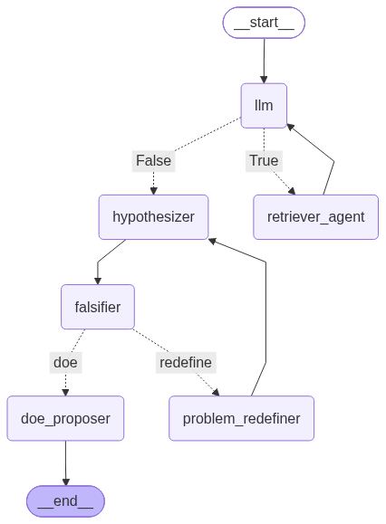

HypoGen Project
HypoGen represents a paradigm shift in how researchers approach the early stages of scientific inquiry. In an era of information overload, the bridge between existing literature and a testable hypothesis is often blocked by the sheer volume of available data. HypoGen automates this cognitive leap by transforming unstructured scientific papers into structured insights. By simulating the workflow of a professional research team, the tool ensures that the journey from a general scientific problem to a specific experimental design is grounded in evidence and stripped of human bias.
At the core of the system lies a sophisticated Retrieval-Augmented Generation architecture that treats scientific literature as a source of absolute truth. Unlike standard AI models that may hallucinate, HypoGen utilizes a local vector database to anchor every claim in actual text. The system functions as a digital librarian, scanning through PDFs and technical documents to extract only the most relevant facts. This ensures that the foundation of any proposed hypothesis is not a probabilistic guess, but a synthesis of verified empirical data retrieved through diverse and precise search queries.
True science is not defined by the search for confirmation, but by the attempt at falsification. HypoGen embodies this principle through an iterative auditing loop where a dedicated Falsifier agent challenges every proposed hypothesis. If the agent detects a logical contradiction between the hypothesis and the retrieved evidence, the system does not simply fail; it pivots. It triggers a problem redefinition phase that narrows the research scope or adjusts the scientific angle, repeating this cycle until a logically sound and contradiction-free hypothesis emerges.
The final objective of HypoGen is to move beyond theory and provide a concrete blueprint for physical validation. Once a hypothesis survives the falsification process, the system translates it into a rigorous Design of Experiments. By analyzing the critical parameters involved, the tool automatically proposes the appropriate full factorial design, ranging from simple two-factor setups to complex multi-variable frameworks. This output provides the researcher with a complete experimental protocol, including defined variable levels and clear a priori validation criteria.
The architecture of HypoGen shown below is built upon the cutting edge of agentic workflows, utilizing LangGraph and local LLM integration to ensure data privacy and deterministic results. By employing a state-graph structure, the tool manages complex transitions between the retriever, the hypothesizer, and the auditor with surgical precision. This technical framework is designed to minimize randomness and maximize reproducibility, providing a professional-grade tool for scientists who require a high degree of control over the reasoning process of their AI assistants.

GitHub: github.com/markus-schindler/HypoGen